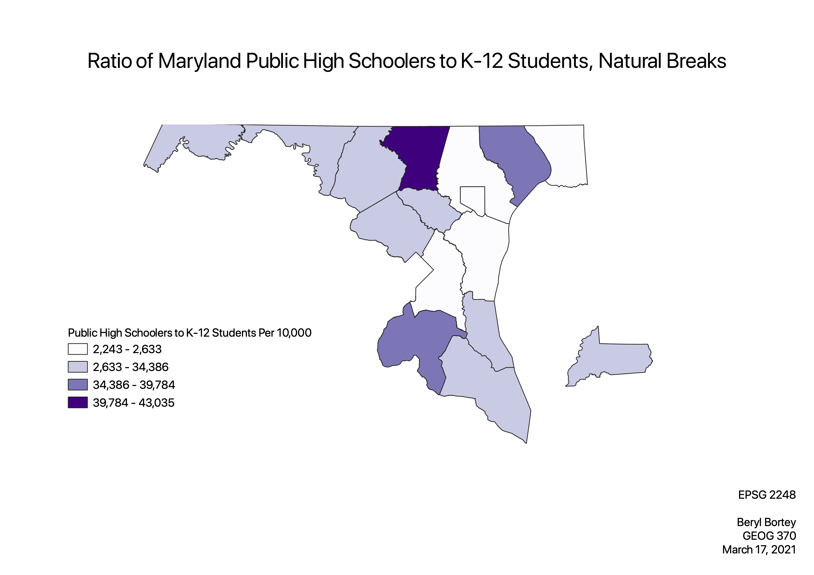

Homework 8: Census Data Ratios and Categories
Beryl Bortey
To create this ratio, I used the field entitled “C14002_016E” as the numerator. This field represents the count of Maryland public high school students in each county. I used the “K-12” field as the denominator. That field relates to the number of K-12 students in each Maryland county. Using the field calculator, I created a new field called “HS/K12.” This field contained an expression that divided the aforementioned numerator by the denominator. I placed that expression in parentheses and multiplied it by 10,000. I used this ratio because it highlights the share of public high school students out of all the K-12 students in the county. This gave me a map that depicts public high schoolers to K-12 students per 10,000 students.
Map 1: Equal Count (Quantile)
This classification mode equally distributed the number of counties into each class. Since there were 16 observations in the dataset, 4 classes were used. Each class has 4 observations. A pro of the quantile method is that it can depict which counties are in the top 25% for Maryland public high schoolers to K-12 students. Additionally, the 4 classes are very visually distinguishable, and this makes the map even more readable. But the disadvantage of this method is that the ranges for each class can vary widely. For example, the range for the first class is 383, but the range for the final class is 32,163.
Map 2: Equal Interval
The equal interval scheme divided the ratio values into equally sized classes. Once again, I used four classes. When I added more classes, it was very difficult to match the legend gradient to the shades on the map. Reducing the number of classes to three also wasn’t effective because the shade variations in the map were limited. This problem still exists with four classes, but having the range be close to 10,000 made the legend clearer. The range for each class was 10,198. This understandable legend is one of the advantages of the equal interval classification scheme. A disadvantage is that only the first and fourth classes were represented. The second and third classes aren’t even reflected in the map.
Map 3: Natural Breaks
Lastly, the natural breaks method uses value intervals with specific break points. Unlike the equal interval scheme, the ranges for each class are not equivalent. For example, the range of the first class is 390. The fourth class has a range of 3,251. The variability of the ranges is a disadvantage for this method. This scheme can align with this dataset because the data is unevenly distributed (and not skewed at the tails of the distribution).

Data used for this project
CSV Dataset
Link to Vector